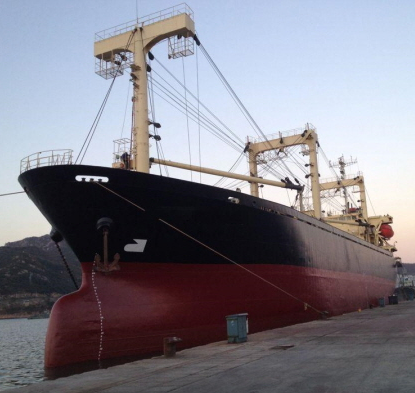

9,147 DWT 5,551 GRT General Cargo Blt 1991 Jp
(18-536) informed by

-
TYPE
:
GENERAL CARGO SHIP (TWEEN DECKER)
- BUILT
:
1991, JAPAN
- FLAG/CLASS
:
PANAMA / PMDS
- LOA/L/B/D
:
98.00 / 89.95 / 18.80 / 12.90 M
- DWT/draft
:
9,147 T (DWCC 8,500 T) / 9.0 M
- GRT/NRT
:
5,551 / 3,336 T
- MAIN ENGINE
:
HANSHIN 6EL40, 2,425 KW X 240 RPM X 1 SET
- SPEED
:
SERVICE 12.4 KNOTS, TRIAL MAX 15.16 KNOTS
- GRAIN/BALE
:
13,789 / 12,611 m³
- HOLD/HATCH
:
2 / 2
- HATCH SIZE
:
NO.1, 20.30 X 12.70 M, NO.2, 33.60 X 12.70 M
- DERRICK
:
25 T X 2 SETS, 30 T X 2 SETS
- LAST DD
:
JAN. 2018
- LOCATION
:
TRADING IN ASIA RANGE
Information History
- 180717 : BNC Shipbroking Co., Ltd. informed to us